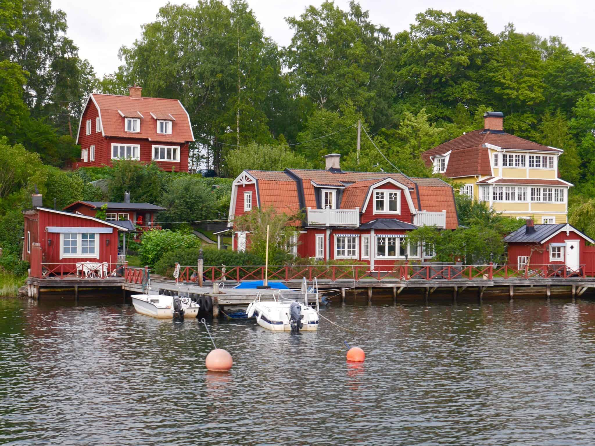
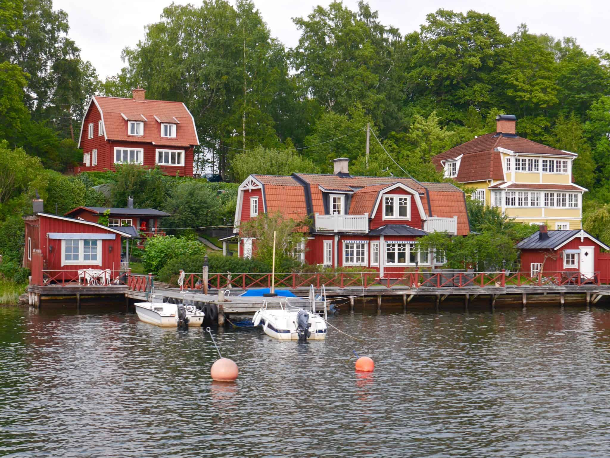

Spinafracta
🇳🇴 Oslo - The Viking Capital
Oslo is the capital and most populous city of Norway. It constitutes both a county and a municipality. Founded in 1040, the city was established as a "kaupstad" or trading place in 1048 by Harald Hardrada.
Fun Fact: Oslo is one of the fastest-growing major cities in Europe, and its metropolitan area is projected to grow by nearly 30% by 2040.
Must-See Attractions
• Viking Ship Museum - See original Viking ships from the 9th century
• Oslo Opera House - Walk on the roof of this architectural marvel
• Vigeland Sculpture Park - World's largest sculpture park by a single artist
• Holmenkollen Ski Museum - Historic ski jump with panoramic views
Cultural Highlights
• Nobel Peace Prize awarded annually at Oslo City Hall
• Munch Museum - Home of "The Scream" by Edvard Munch
• Norwegian National Opera & Ballet
• Traditional Norwegian folk music and dance festivals
Norwegian Cuisine
• Smoked salmon and other fresh seafood
• Traditional "kjøttkaker" (meatballs)
• Brunost (brown cheese) - unique caramelized whey cheese
• "Vaffel" (waffles) with sour cream and jam
Norwegian Black Metal Bands
Focusing only on bands during their true creative periods before commercialization.
Ulver
- Bergtatt (1995) - Ethereal folk-black masterpiece
- Kveldssanger (1996) - Acoustic atmospheric journey
- Nattens Madrigal (1997) - Raw, unproduced black metal perfection
Satyricon
- Dark Medieval Times (1994) - Medieval atmosphere meets raw aggression
- The Shadowthrone (1994) - Epic pagan black metal
- Nemesis Divina (1996) - Their peak before the decline
Gorgoroth
- Pentagram (1994) - Raw Satanic black metal
- Antichrist (1996) - Blasphemous perfection
- Under the Sign of Hell (1997) - Their creative peak
- Destroyer (1998) - Still respectable
- Incipit Satan (2000) - Last good album


🇸🇪 Stockholm - The Venice of the North
Stockholm is the capital and largest city of Sweden, and the most populous urban area in Scandinavia. The city is built on 14 islands connected by 57 bridges, earning it the nickname "Venice of the North."
Fun Fact: Stockholm's metro system is often called "the world's longest art gallery" with over 90 of its 100 stations decorated with artworks.
Must-See Attractions
• Gamla Stan - Medieval old town with cobblestone streets
• Vasa Museum - Home to a 17th-century warship that sank on its maiden voyage
• Skansen - World's oldest open-air museum
• Royal Palace - Official residence of the Swedish monarch
Cultural Highlights
• ABBA Museum - Interactive museum dedicated to the pop group
• Nobel Prize Museum - Learn about Nobel Prize laureates
• Moderna Museet - Museum of modern and contemporary art
• Royal Swedish Opera - Founded in 1773
Swedish Cuisine
• Swedish meatballs with lingonberry sauce
• Gravlax - Dill-cured salmon
• Kanelbullar (cinnamon buns) - Swedish fika tradition
• Pickled herring in various flavors
Swedish Death Metal Bands
Focusing on the early, brutal era of Swedish death metal before melodeath took over.
Morbid
- December Moon (1987) - Demo with Dead on vocals
- Last Supper (1988) - Demo, raw death metal
- Morbid Rehearsals (1988-89) - Early recordings
God Macabre
- The Winterlong (1993) - Their only album, a masterpiece
- Recorded in 1991, released in 1993
- Melodic yet brutal death metal
Bloodbath
- Breeding Death (2000) - EP that started it all
- Resurrection Through Carnage (2002) - Classic Swedish death metal
- Nightmares Made Flesh (2004) - With Peter Tägtgren on vocals
- The Fathomless Mastery (2008) - Technical brutality
- Grand Morbid Funeral (2014) - Return to roots
 
